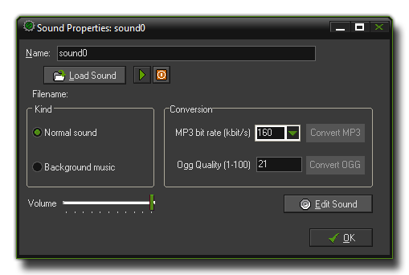

To add a sound resource to your game, use the Resource menu or right-click on the resource tree and select Create Sound, or you can use
the corresponding button on the toolbar. Any of those will bring up the following window :

To load a sound, press the button labeled Load Sound. A file selector dialogue pops up in which you can select the sound file, which can only be either a wave file or an mp3 file. Wave files
(*.wav) are used for the short sound effects as even though they are generally larger files they will play instantaneously due to the fact that they do not need any type of decoding for playing. You can also
have multiple wave files playing at once, which is why you should use these for all the sound effects in your game. Mp3 (*.mp3) files should be used for background music as GameMaker:Studio
only permits you to play one music track at a time. These files are much smaller than a wave file would be but have a cpu overhead as they have to be decoded before being played, hence the limit of only
one mp3 file being played at time (however, you can have multiple music tracks in your game, and you would just switch between them when necessary).
The Kind of file is used by GameMaker:Studio internally to organise how each file is stored and played, with normal sounds automatically being associated with *.wav files, and
background music being assigned to *.mp3 files. This means that if you assign the wrong kind of sound asset, you may not hear anything in game, so make sure that you only load
*.wav files for Normal Sounds and *.mp3 for Background Music.
NOTE: Previous versions of GameMaker accepted midi file format but that is not the case with GameMaker:Studio. You cannot use midi any longer and any imported files from
legacy versions which use these may cause the program to crash. These files should be removed or changed before testing!
Once you have loaded your file you can preview the sound by using the play button which will loop it continuously. This is very handy as it means you can make changes to the volume using the slider at the bottom
of the window and hear what the effect it will have on the sound. There is a stop button too, so you can stop the preview at any time.
NOTE: If you are using the Free version of GameMaker:Studio you are limited to a maximum of 10 sounds per game. For more details see
here.
For HTML5 and some devices, it is necessary that all sound files be converted to *.ogg (Ogg Vorbis) format files and *.mp3 files. GameMaker:Studio will do this automatically for you
but you do have some control over the quality of those sounds when converted. Generally the default settings of 160kbit/s for mp3 and level 21 (roughly 22050khz at 40kbit/s) are perfectly adequate and give
approximately the same size of file, but it may be that you wish sound effects (for example) to have a lower quality and music to have a higher quality, in which case these settings can be changed.
NOTE: The higher the quality, the larger the file, and this should be taken into account when deciding what bitrate to choose.
GameMaker:Studio does not have a built-in sound editor. But, in the Editor Preferences, you can indicate external
editors that you want to use for editing sounds. If you selected these you can press the button labeled Edit Sound to open the chosen editor and change the current sound. The GameMaker:Studio
window will be hidden while you edit the sound and returns when you close the sound editor (you must save the sound in the editor first otherwise it will not be saved in GameMaker:Studio.